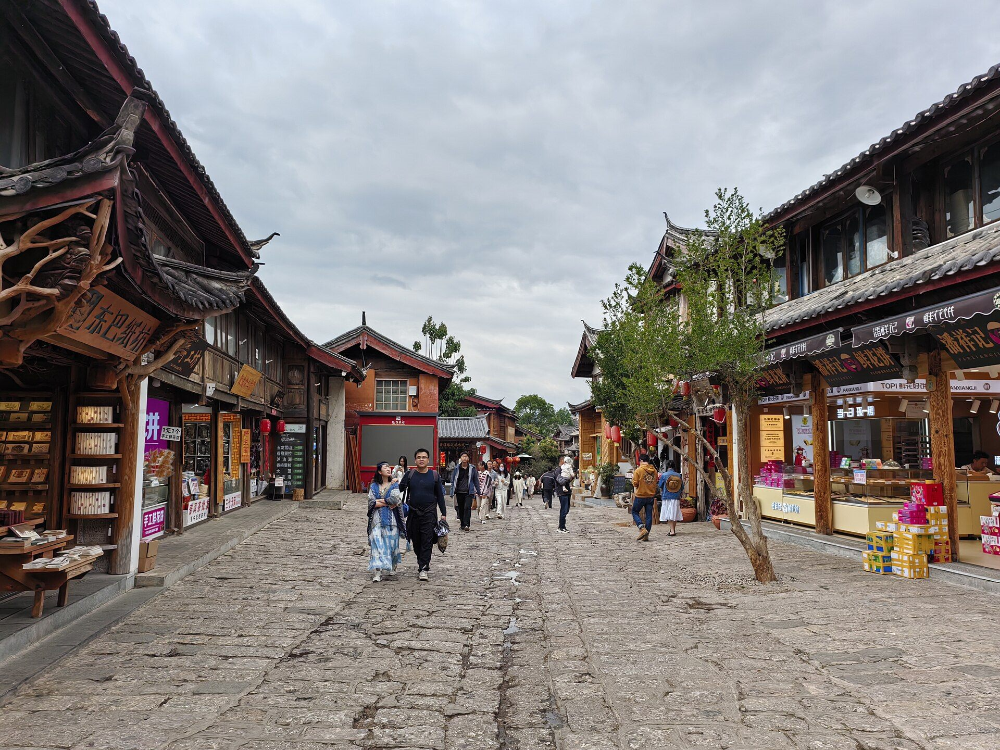
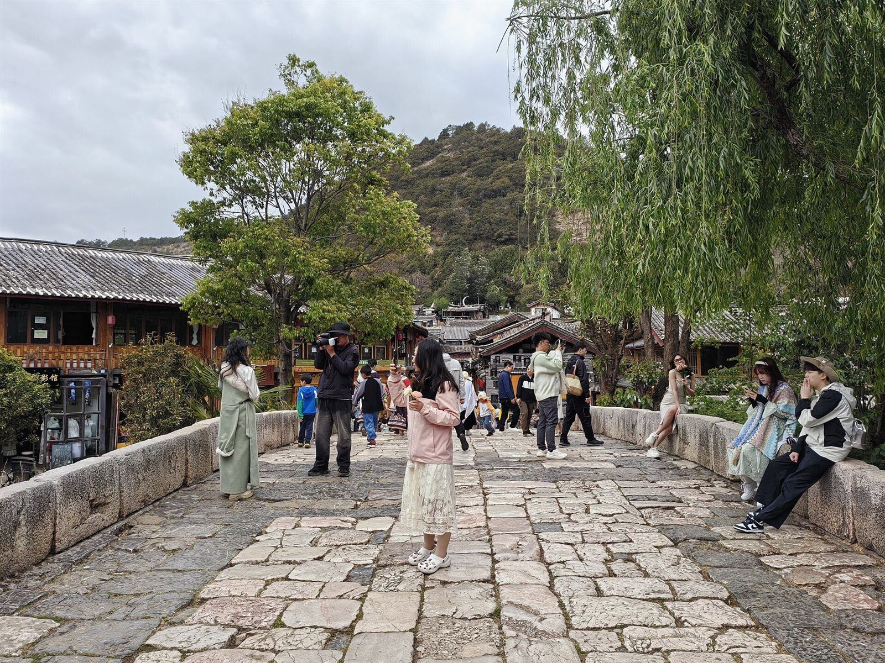
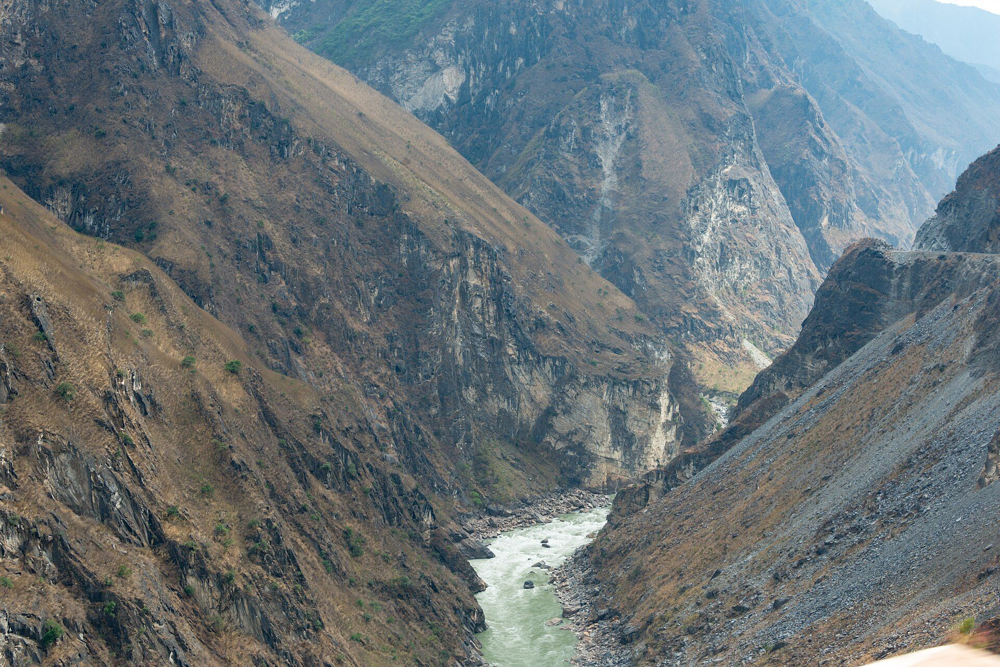
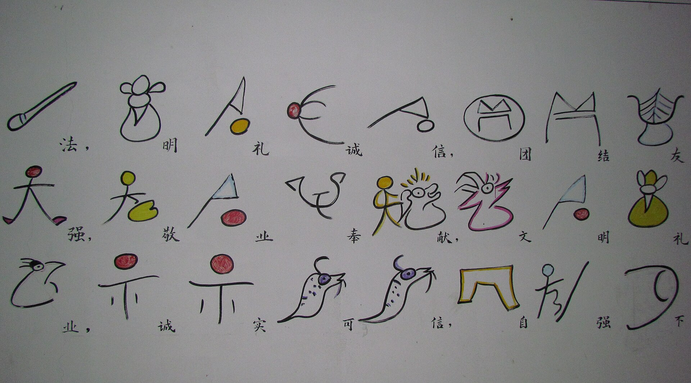
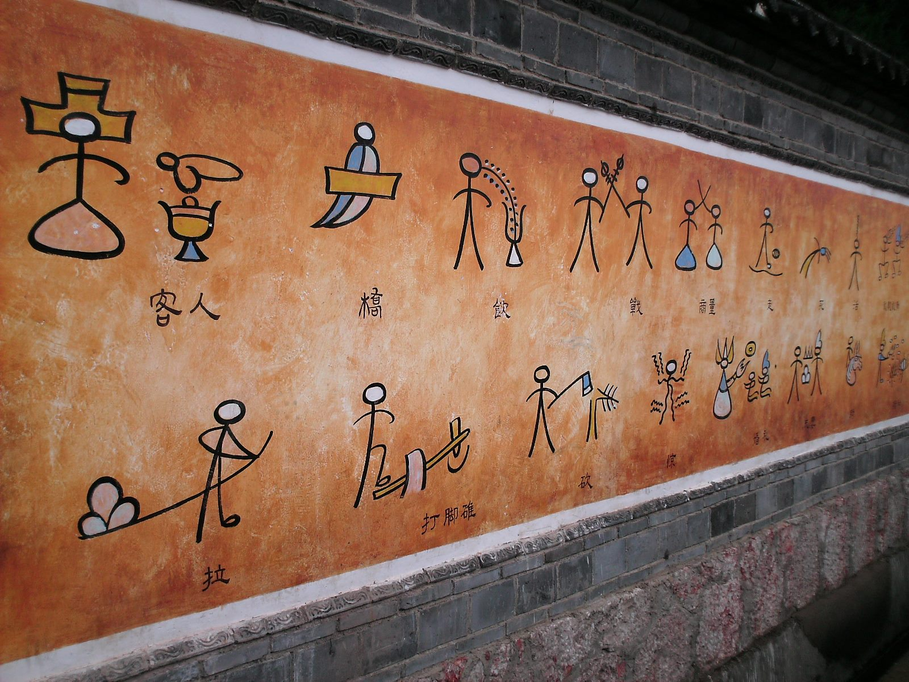
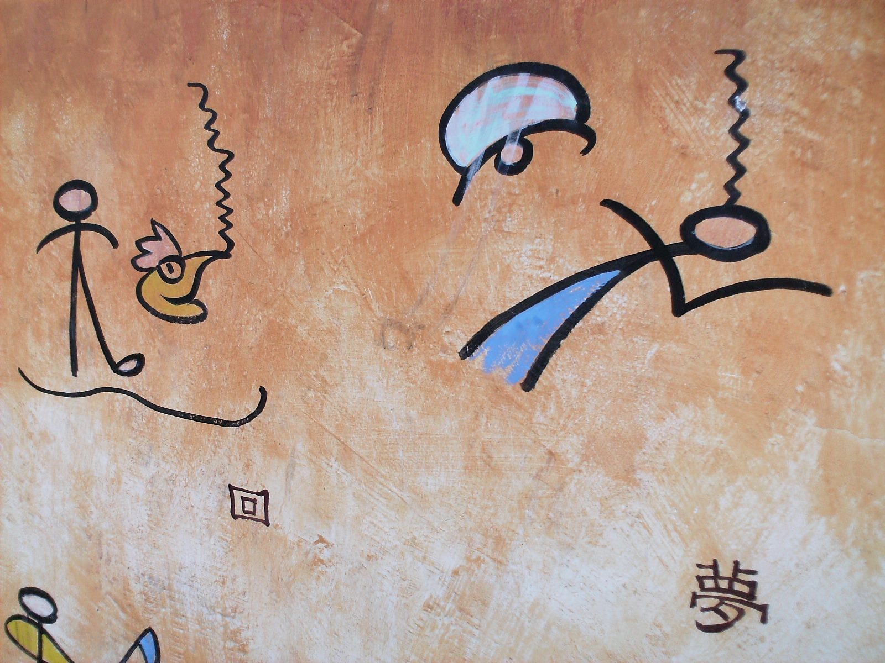

World Heritages of Lijiang
大研古城没有城墙——民间传「木」字加框成「困」，另有「部族互防无筑城传统」「茶马重镇开放包容」诸说，至今并存。古城以四方街为中枢、活水穿城，三眼井依高差分级使用；「家家流水，户户垂杨」语出旧《丽江府志》。1996 年「2·3」大地震（7.0 级，309 人遇难）后整座古城重修，次年列入世界遗产——毁而复生，是这座古城传奇的最近一章。
「古城丽江，把经济和战略重地与崎岖的地势巧妙地融合在一起，真实、完美地保存和再现了古朴的风貌。古城的建筑历经数个世纪的洗礼，融汇了各个民族的文化特色而声名远扬。」



2003 年 7 月 2 日，巴黎第 27 届世界遗产大会将「三江并流」列入《世界遗产名录》（自然遗产）。金沙江、澜沧江、怒江三条发源于青藏高原的大江在滇西北自北向南并行奔流 170 余公里而不交汇，遗产地总面积约 1.7 万平方公里，由高黎贡山、白马—梅里雪山、千湖山、红山、哈巴雪山、云岭、老窝山、老君山八大片区组成——其中老君山片区在丽江境内，是黎明傈僳族乡丹霞家园的所在。
2003 年 8 月，东巴古籍文献入选联合国教科文组织《世界记忆名录》——与丽江古城、三江并流同年，使丽江在一年之内集齐文化与自然两项世界遗产和一项世界记忆遗产。这批以「世界上唯一活着的象形文字」书写的典籍约 3 万册，散藏于全球十余个国家的图书馆与研究机构。
它们如何流散、如今身在何处、正被如何数字化——本馆为此做了一个专题：东巴文献全球流散长卷。

规模参照：全市四级非遗名录 2022 年口径为国家级 8 + 省级 39 + 市级 97 + 县区级 634 项，各级传承人约 1099 名；2026 年报道口径为省 56 + 市 124 + 县 710 项、传承人 1060 名（不同年份统计，引用注明时点）。
玉龙县白沙镇琉璃殿（明永乐十五年，1417 年建）与大宝积宫（明万历十年，1582 年建）等处的壁画，1996 年公布为第四批全国重点文物保护单位。现存 45 铺、约 140—144 平方米（大宝积宫 12 幅约 61.5 平方米），绘制跨越明初至清初三百年。
它最珍贵的身份是「四族同壁」：先后有汉、藏、纳西、白族画师参与绘制，汉传佛教、藏传佛教与道教题材同堂共处（《如来讲经图》儒释道同框）——一幅壁画，就是「各民族交往交流交融」最直观的明代物证。2024 年完成一期科技保护修复。
另：金龙桥（清·金沙江铁索桥，第六批国保）、宝山石头城（第八批国保）同为丽江国保。全市四级文保单位约 199 处。

